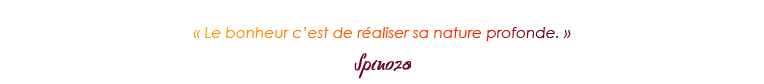
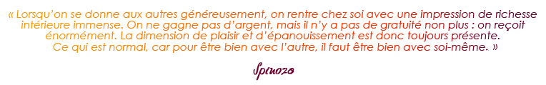
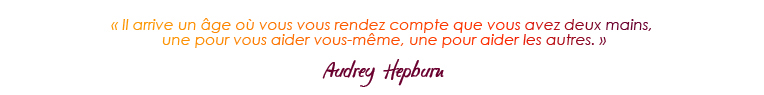
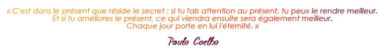
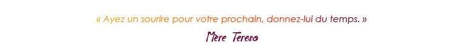
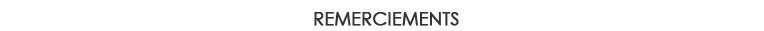

Je me présente, Grégoire du Boullay, j’ai 53 ans. J’ai grandi en Suisse puis en France. Je travaille actuellement chez Novalto à Paris en tant que Directeur du Développement.
Je suis un papa comblé de 2 merveilleux enfants. J’ai adopté en 1997 mon fils Lucas au Vietnam et en 2002 ma fille Anouk au Cambodge.
En quelques lignes je vous explique pour quelle raison en 2014, j’ai décidé de concrétiser un projet auquel je pense depuis des années. En effet, depuis très longtemps la condition des enfants dans les pays défavorisés me touche.

L’élément déclencheur de la réflexion sur ce projet sont plusieurs changements de ma situation personnelle. Cela m’a permis d’effectuer un travail sur moi, mes priorités et mes valeurs. J’ai pris conscience du sens de la vie, de « ma vie ». Cette conscience de soi permet de « me réaliser » et de ne pouvoir rien regretter en mettant en place un projet qui me tient à cœur.
J’ai grandi dans une famille où le fait d’entreprendre et de réussir est une composante importante. Cependant, je n’ai pas suivi le parcours scolaire traditionnel. Je me suis arrêté au Bac et j’ai décidé de retourner sur les bancs de l’école à l’âge de 40 ans pour suivre des études d’Executive MBA à HEC dont j’ai obtenu mon diplôme.
Etant baigné dans l’entreprenariat, j’ai appris à maîtriser les outils du business et « entreprendre » me passionne. A cette occasion je développe et accompagne les projets des autres en tant que conseiller et/ou investisseur et de les mener à bien sur le plan du business, tout en étant salarié.
Deux moments de ma vie ont déterminé le choix de mon projet aujourd’hui :
Le premier moment :
En 2002, j’ai adopté ma fille Anouk Mealea au Cambodge. Durant ce voyage, j’ai rencontré Mme et M. des Pallieres qui avaient fondé 8 ans auparavant l’association « Pour un sourire d’enfant ». Afin de m’expliquer leur action, ils m’ont emmené sur la décharge de Phnom Penh où vivaient des centaines de familles dans le dénuement le plus total.
13 ans après cet évènement, j’ai compris que c’est à mon tour d’opérer une action humanitaire envers les autres.
Dans un premier temps, nous avons fondé une association « Cambodge Enfance Développement » avec quelques parents qui avaient adopté des enfants dans le même orphelinat.
Avec ce processus d’adoption, j’ai découvert un univers dans lequel je voulais m’investir et les leviers sur lesquels je pouvais agir.
Le deuxième moment :
Ma rencontre professionnelle avec le fondateur de Novalto pour lequel je travaille toujours actuellement. Cette personne m’a fait confiance, la confiance que je n’ai jamais eue. Grâce à lui, j’ai eu un autre regard sur moi et pris confiance en moi. Je lui en suis très reconnaissant.
Albert Einstein disait : « je n’ai pas de talent particulier. Je suis seulement passionnément curieux. ». Cette citation m’interpelle car elle illustre profondément qui je suis… « passionnément curieux » !
Depuis mes 18 ans, je voyage à travers de nombreux pays tels que les USA, le Canada, le Mexique, le Brésil, le Pérou, l’Egypte, le Maroc, le Kenya, la Côte d’Ivoire, la Chine, le Japon, la Corée, le Vietnam, l’Indonésie, la Malaisie, la Thaïlande, le Laos entre autres et dernièrement le Costa Rica. Ces pays nourrissent ma curiosité. Ils m’apportent beaucoup par rapport aux rencontres d’autres voyageurs ou locaux, aux cultures si différentes de la mienne et aux sourires partagés.
Le sourire est un langage universel. Rien de plus merveilleux qu’un sourire d’enfant, il me rend heureux !
A l’âge de 14 ans en Suisse, je me souviens de ma rencontre avec Yehudi Menuhin. Ce Monsieur m’a marqué par son « empathie et sa bienveillance ». Ces 2 mots m’affectionnent.
En effet, ces mots résonnent dans ma tête avec le projet que je souhaite lancer aujourd’hui. Ce n’est pas juste une simple donation ou implication à distance. C’est m’investir à fond dans un projet lié aux enfants démunis. Je veux leur permettre l’accès à l’éducation et à l’école : « Apprendre ». Tout au long de notre vie nous apprenons. Malgré mes compétences professionnelles, mon expérience de ma vie, j’ai encore à apprendre auprès de ces enfants. La vie est un apprentissage !
Je veux donner une nouvelle dimension à ma vie en consacrant mon temps aux enfants les plus démunis.
J’ai commencé avec une citation de Spinoza et clôture avec lui :

Deux autres citations résument toute l’essence de la nature de mon projet :


Ces deux citations traduisent ma pensée actuelle et mon changement de vie que j’ai eu au cours de l’année 2014.
Comme tout le monde, j’étais happé par la routine quotidienne. Mais suite
à des événements dans ma vie privée, aujourd’hui il me semble utile de donner un sens à ma vie et à mes actions en créant une association pour les enfants démunis en Asie du Sud-Est. Les enfants suscitent en moi une profonde émotion.
Pour élaborer ce projet futur je me suis renseigné en consultant et en lisant des documents, des livres, des articles… puis en rencontrant dans ma vie personnelle et professionnelle des personnes engagées qui ont le même but : aider les enfants.
J’ai longuement discuté et partagé ce projet tout d’abord avec mes enfants adoptés Lucas et Anouk, ma famille et mes amis très proches. J’en ai parlé aussi à mon entourage professionnel dont Sylvain Bianchini, mon patron actuel chez Novalto, Olivier Brechard, ex dirigeant de l’organisation W.I.S.E., sans oublier
Christine de Fontanet, Christophe Landais et Jean Dallais qui agissent déjà dans le monde associatif. Toutes et tous ont pris le temps de m’écouter, de m’encourager, de me conseiller et surtout de me soutenir.
La priorité de ce projet est un plan d’éducation et d’intégration à l’école pour les enfants qui n’ont pas la chance d’apprendre, de s’instruire, de se cultiver... Avec cet apprentissage ces enfants pourront être autonomes, construire un avenir personnel et professionnel tout en restant dans leur pays, leur environnement sans abandonner leur famille. J’ai été inspiré par le projet d’éducation des enfants en Uruguay « La Scola Nueva », Apprendre pour Apprendre.
En janvier 2015, je suis parti au Vietnam à la rencontre de quatre associations. Je les ai choisies en fonction de leurs actions menées et reconnues pour les enfants défavorisés. Deux des quatre associations ont particulièrement retenu mon attention car ne possédant rien au départ, ces deux associations internationales à taille humaine mènent et accomplissent parfaitement leurs actions. Au printemps, je poursuivrai mon itinéraire vers la Thaïlande, la Birmanie, le Cambodge et le Laos, toujours au contact des associations françaises ou étrangères qui opèrent sur place depuis de nombreuses années.
Pour mener à bien mon plan d’action, en janvier 2016 j’ai prévu de partir auprès
de ces associations pour devenir bénévole au Vietnam ou au Cambodge, lieux où sont nés mes enfants. Je resterai 6 mois ou peut-être plus. Ainsi j’aurai acquis une véritable expérience humaine et professionnelle au contact d’une autre culture, je découvrirai tous les aspects économiques et sociaux et je réaliserai vraiment la nature de mon projet. Après cette mission de bénévolat, je m’installerai définitivement en Asie afin de concrétiser mon projet : Fonder mon association OKOS > One Kid One Smile.
J’ai créé ce site web « OKOS » pour permettre de partager, d’échanger, de collecter des idées et/ou suggestions avec celles et ceux qui sont intéressés par ma démarche. En ce sens, n’hésitez pas à m’écrire sur ma boîte mail : gregoire@onekidonesmile.org
En fin d’année 2015, je constituerai mon propre « Fonds de dotation » qui sera le cœur du démarrage de mon projet. Par la suite, je ferai appel à la générosité des personnes et des entreprises.
J’ai aussi un autre objectif, complémentaire à mon projet actuel. Je souhaiterais créer un « écosystème » social, sociétal, environnemental, responsable et solidaire.
Mais pour l’heure, je m’investis totalement au projet lié aux enfants démunis.


Je tiens à remercier les personnes suivantes : mes 2 enfants Lucas et Anouk,
Lina Vial, Aissatel Amet, Sylvain Bianchini, Olivier Brechard, Christophe Landais,
Jean Dallais, Hien Thuc Ngo, Varaporn Noothong, Antoinette Cole,
Michel Vielledent et Véronique Surget, Caroline Gichuki, Beth Schaeba,
Christine de Fontanet, Mei Szabo, Maggi, Jamila El Yousfi, Philippe Remoissenet, Emmanuel Breuil, Dominique Lapierre, Thomas Chavane, Blandine de Mareuil, Anahit Dasseux,
Anne Yanic, Jean Michel Buffet, Benoit Desveaux, M. et Mme des Pallieres.
Et aussi les personnes disparues mais qui m’ont insufflé ce projet : ma maman, Yehudi Menuhin, Mère Teresa et Larry Collins. |